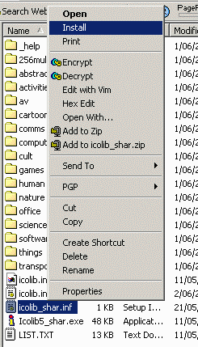
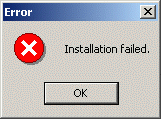

A useful feature is to be able to double-click on any
ICL file on your system and have Icon Library start up
and display the icons in that file. By registering the ICL
file type to Icon Library you can make this happen. The following
steps show how to set up this option. If you already have
another program associated with the ICL file type, you may
not want to proceed further. Icon Library will still work but you
will have to start it by double-clicking its own icon or shortcut.
There is a file in the Icon Library distribution which sets up
this feature. The file in the shareware version of Icon Library is
called icolib_shar.inf and the for the full version of Icon
Library it is called icolib_reg.inf. Although I use the
shareware version as an example in this guide, these instructions
will work with both files.
Find the icolib_shar.inf file and right click on it.
On the menu that appears, find the Install option near the
top of the menu list and click on it.

Windows does not display any feedback when you click on the
Install option, however, you may see some disk activity
when the Windows Registry is updated.
If you are using Windows NT or Windows 2000 and do not have
Administrator priviliges, you may see an "Installation failed"
Error.

I am not sure why this happens because the required
changes seem to be entered into the Windows Registry anyway. You
can avoid this message by logging on as Administrator before you
change any Windows Registry settings.
You should now be able to double-click on an ICL file
and see the Icon Library viewer program appear. It will display the
icons contained in the chosen ICL file, or you can then load
any of the other icons that are distributed with Icon Library.
If you decide you no longer need Icon Library then it is very
easy to remove it
from your system.